Impossible de visiter Tokyo sans aller au moins une fois à Shibuya. Vous connaissez sûrement déjà ce quartier, c’est celui qui possède l’un des carrefours les plus fréquentés au monde. Quel spectacle que l’observation de la foule se croisant en files continues ! Tous ces piétons se rendent dans l’un ou l’autre des immeubles de magasins de mode de ce quartier. A Ginza, l’ambiance est différente, nous sommes là dans le temple du luxe. Si vous recherchez un vêtement hors du commun, c’est incontestablement là qu’il faut aller. Pour un shopping plus différencié, c’est plutôt du côté Shinjuku qu’il faut aller. Vous y trouverez de tout dans les innombrables galeries commerciales, et du matériel photo dernier cri dans Electric Street.
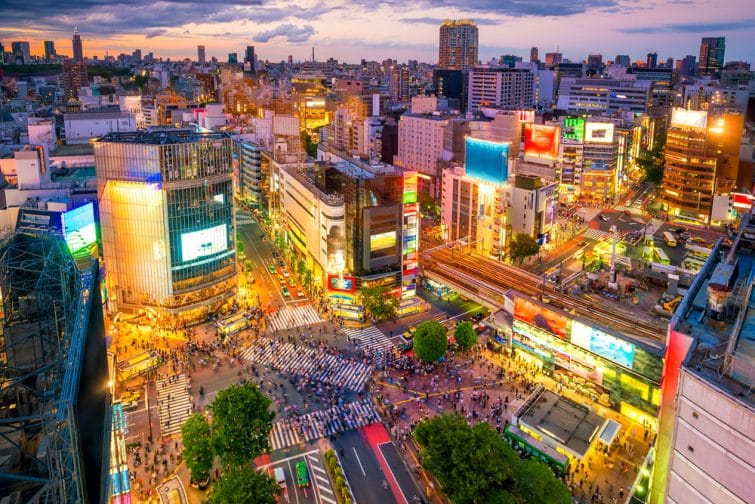 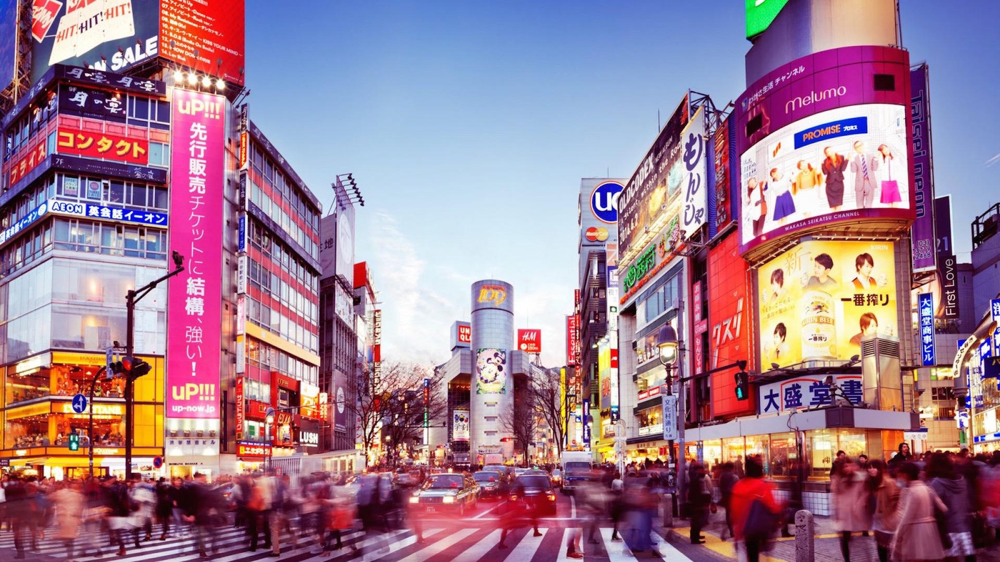Akihabara est le quartier électronique de Tokyo. C'est le lieu privilégié des amateurs de mangas, jeux vidéo et de culture populaire japonaise, très apprécié des jeunes touristes étrangers "geek" ou "otaku". Il est également connu sous le nom de "ville électrique" en raison des devantures lumineuses des commerces qui scintillent à la nuit tombée.
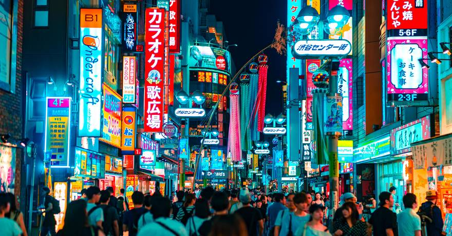 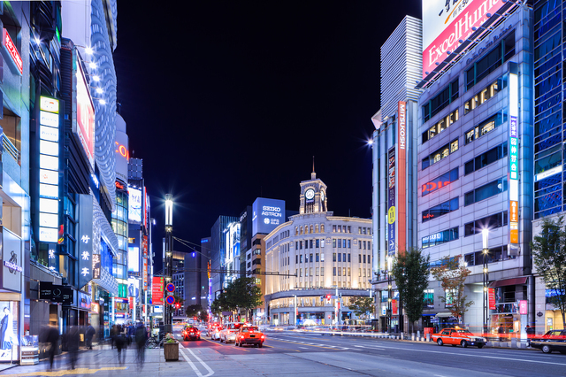Tokyo et Kyoto regorgent de temples bouddhistes et de sanctuaires shintos. Les Japonais ont pour habitude de célébrer les naissances et les mariages selon la tradition shintoïste portée sur la nature et les décès selon les rites bouddhiques arrivés de Chine au 7ème siècle. Ces lieux de cultes sont des merveilles d’architecture imprégnées d’histoire.
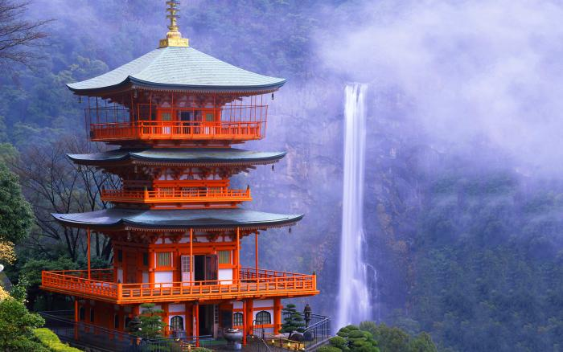 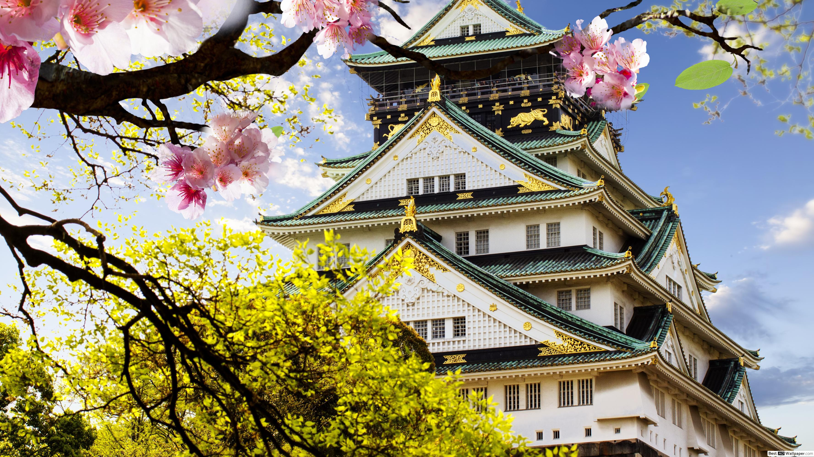Ouvert en 1988, le Tôkyô Dome est le symbole même du Tôkyô Dome City. Avec une capacité de 55 000 places, c’est dans cet immense stade couvert que jouent à domicile les Tôkyô Yomiuri Giants, l’équipe de baseball de la capitale. Outre la soixantaine de matchs de baseball, de nombreuses autres représentations y ont lieu tout le long de l’année : évènements sportifs nationaux et internationaux (basketball, football américain, arts martiaux, etc.), expositions et concerts (Les Rolling Stones et Michael Jackson s’y sont produits, pour ne citer qu’eux).
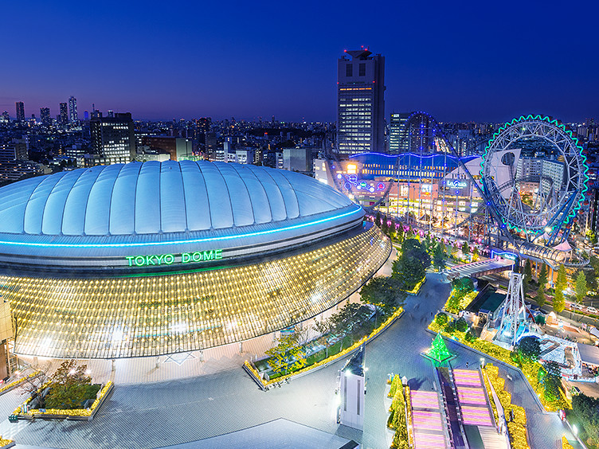 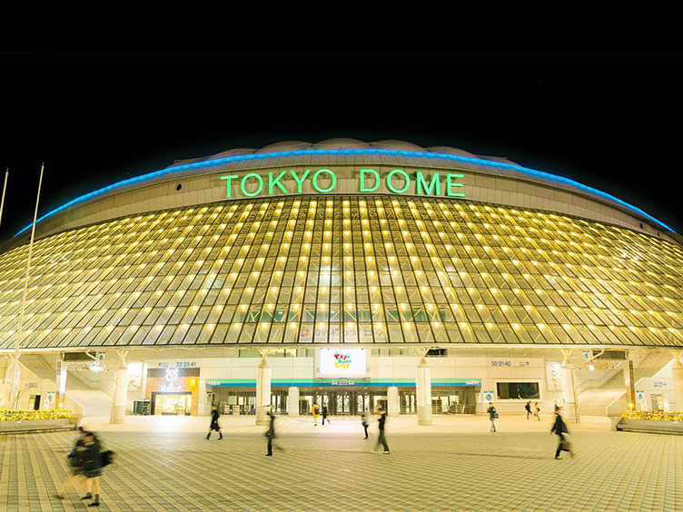Evidemment, Tokyo est une métropole gigantesque mais pour autant, les espaces verts sont très nombreux. De grands parcs nationaux aux petits jardins, sans oublier de véritables forêts urbaines et des résidences impériales, Tokyo est peut-être la plus verte des grandes capitales.
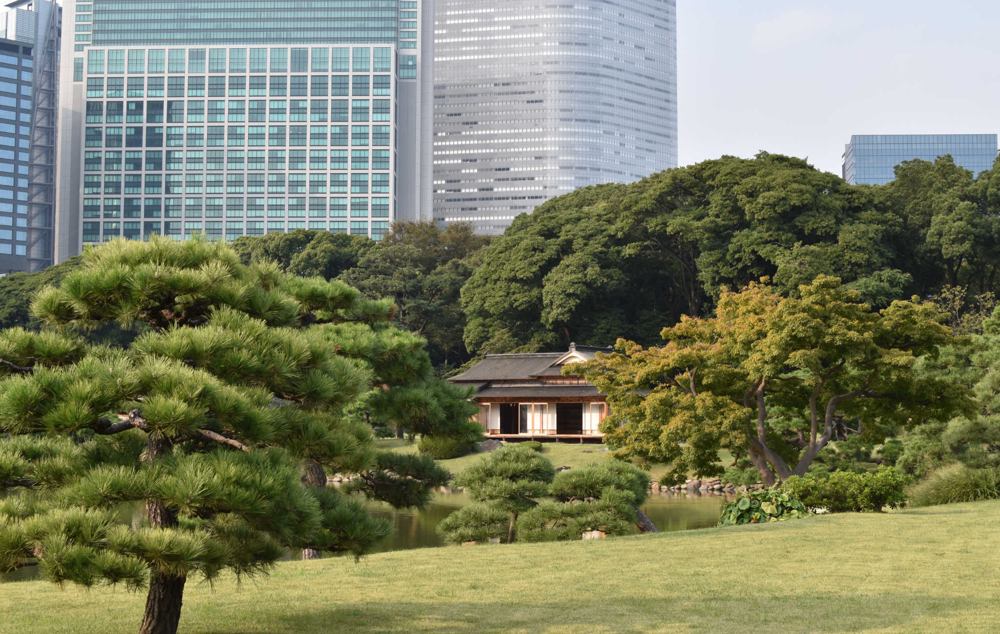 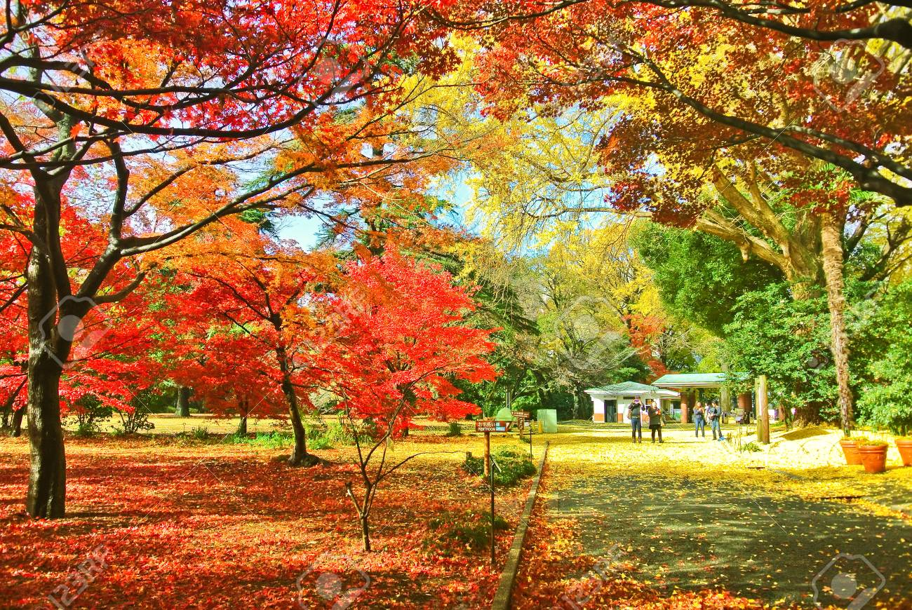La cuisine japonaise est souvent qualifiée de bonne pour la santé. L’art culinaire nippon est un spectacle pour les yeux et un régal pour les papilles. Des ustensiles utilisés aux divers modes de cuisson, tout est réuni pour déguster de succulents mets. L’archipel japonais abrite un bon nombre d’îles s’étendant toutes sur un vaste territoire. On ne parle pas d’une cuisine locale, mais de plusieurs cuisines régionales. Les produits culinaires à disposition offrent au Japon une diversité gastronomique très appréciable.
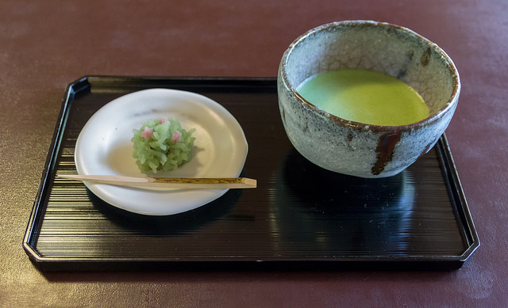 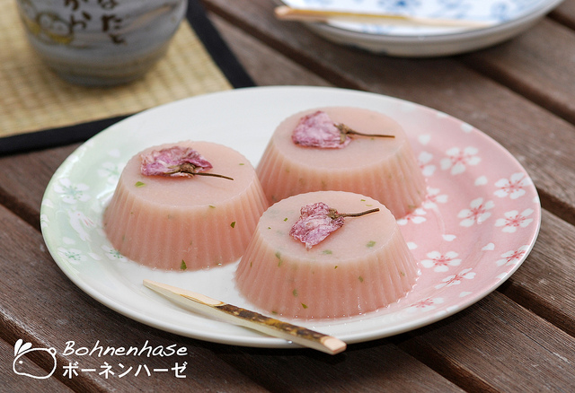 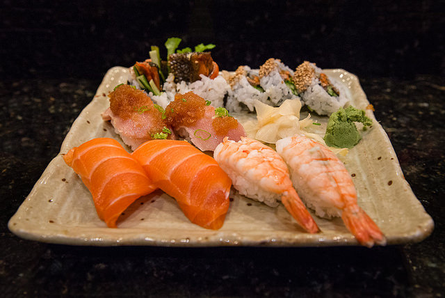 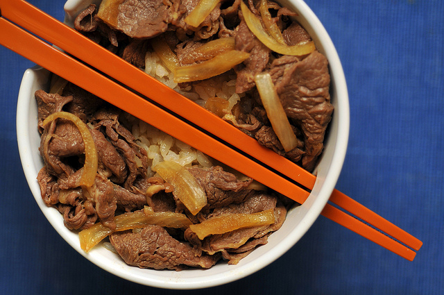 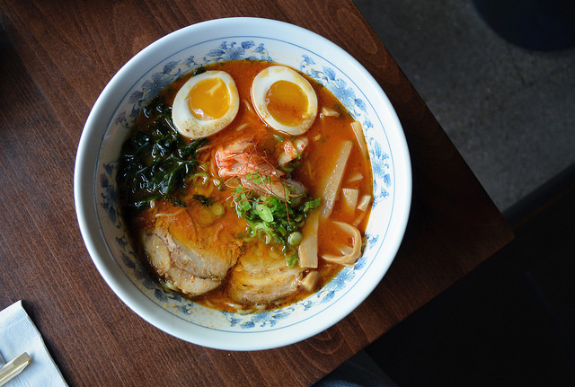 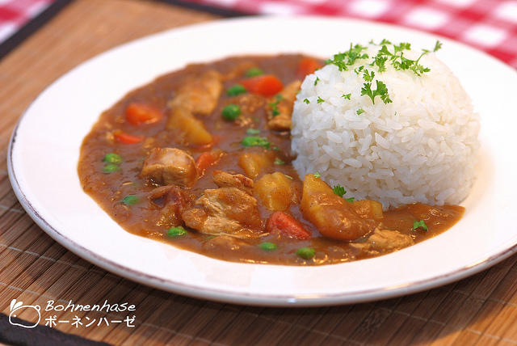 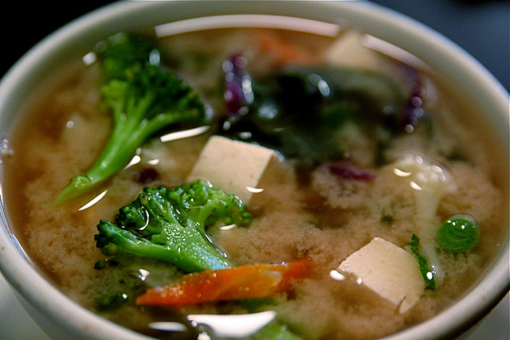 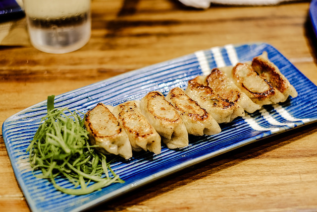Le Mont Fuji est une montagne japonaise en forme de cône volcanique située sur l'île principale de Honshu, à cheval sur les préfectures de Shizuoka et Yamanashi, à 100 kilomètres au sud-ouest de Tokyo. Point culminant du Japon avec 3.776 mètres d'altitude, le Fuji-san est également l'un des symboles majeurs de l'archipel. Situé non loin de Tokyo, il est une destination appréciée des voyageurs au Japon que ce soit pour en faire l'incroyable ascension (comme un pélerinage accessible même aux randonneurs peu expérimentés) ou plus simplement profiter de ses paysages environnants.
 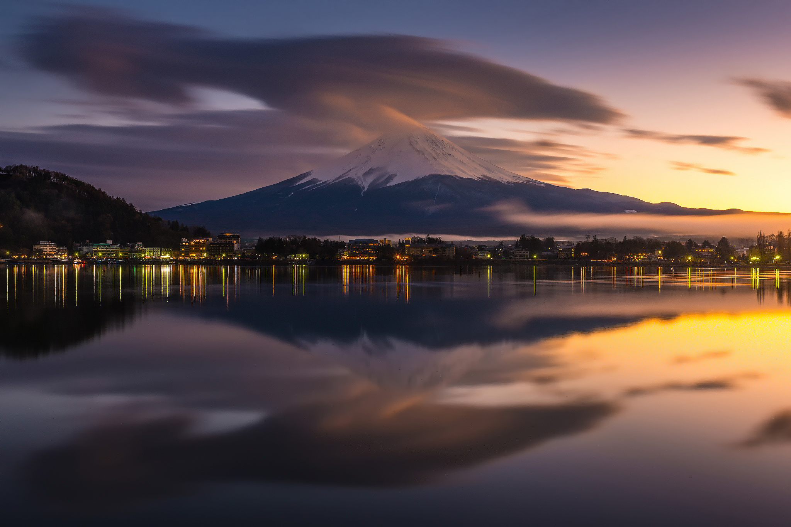
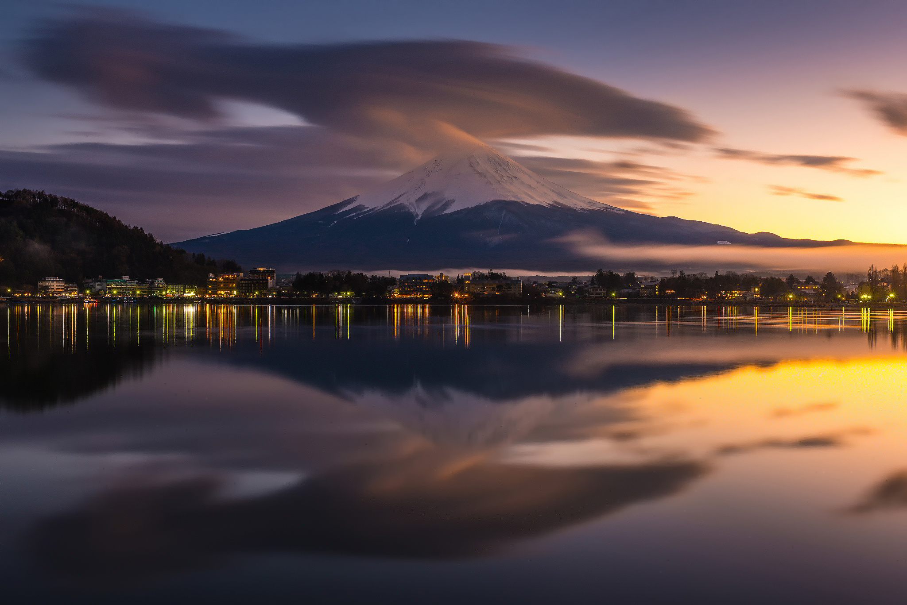